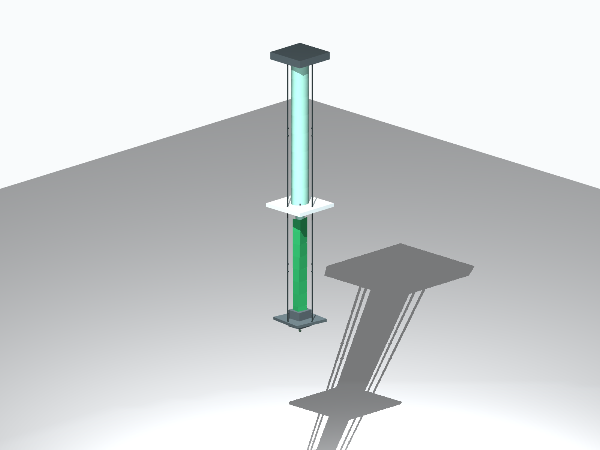
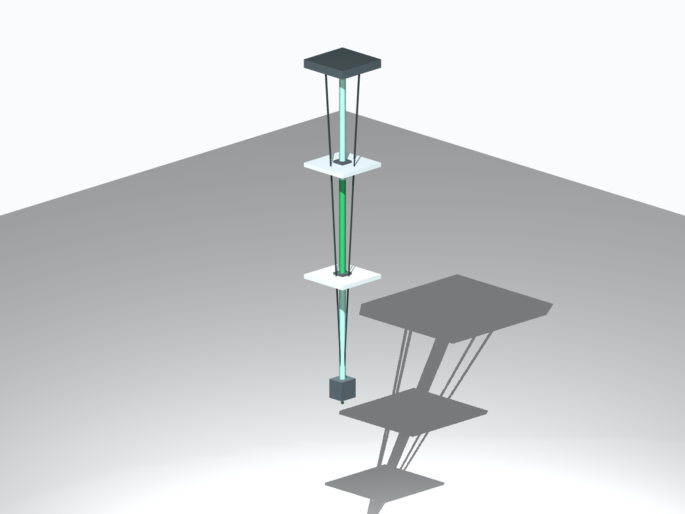
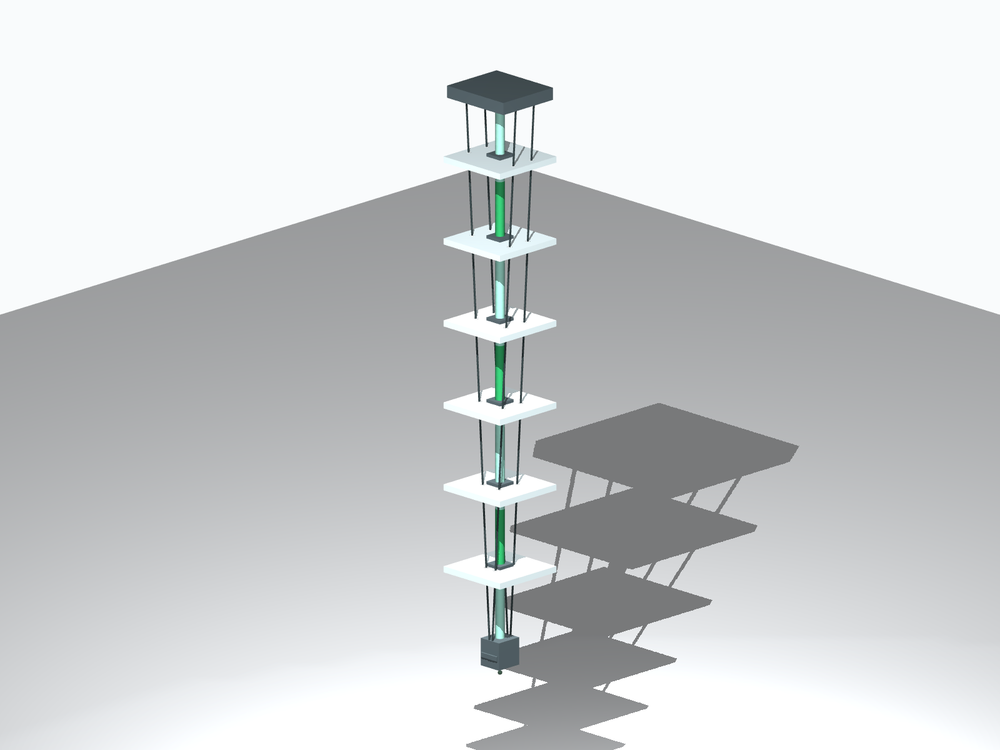

Native MuJoCo views of PHS-2D and T07. Each task uses a fixed camera and scale across its selected structures. PHS F0 is an initial diagnostic, not a registered accepted design. Only the two T07 morphologies with original physical XML are shown; its other math-only candidates remain in the evidence table. Previously completed visual mounting, anchor and junction envelopes are retained as visual-only elements.